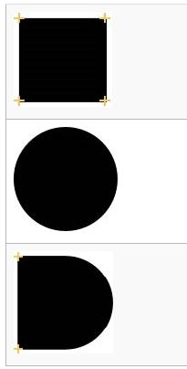

Une des étapes primordiales de la Réalité augmentée est la détection d'image à l'aide d'une caméra. C'est à partir de l'image détectée dans le monde réel qu'on saura quel contenu doit être affiché. De plus, l'image nous servira à savoir à quel emplacement les objets doivent apparaître.
Création d'une base de données d'images
Pour détecter des images dans Unity avec Vuforia, vous devrez vous créer une base de données contenant les images à détecter.
Avant de commencer, assurez-vous d'être connecté à votre compte Vuforia sur le portail de développement. Vous pouvez y accéder via le site suivant:
Vuforia Engine Developer Portal
Une fois connecté, assurez-vous d'être dans l'onglet develop du menu gris, puis allez dans l'onglet Target Manager du menu vert.
Maintenant, cliquez sur Add Database pour créer une base de données.
Donnez un nom à votre base de données et sélectionnez Device puisque l'on souhaite que la base de données se sauvegarde dans l'appareil mobile sur lequel l'expérience fonctionne. De cette façon, le wifi ne sera pas nécessaire pour faire fonctionner votre jeu.
Appuyez sur Create.
Vous pouvez maintenant cliquer sur le nom de votre base de données pour l'ouvrir.
Pour ajouter une image, appuyez sur Add Target.
Conservez le type Image pour votre iamge, on pourrait aussi détecter des objets 3D ou plusieurs images, mais ces fonctionnalités sont payantes.
Appuyez sur Browse dans la catégorie File pour télécharger l'image que vous souhaitez détecter. Idéalement, nous utiliserons des .jpg pour que notre jeu soit le plus léger possible.
Ensuite, donnez la largeur de votre image en mètres. Je vous recommande d'avoir la même largeur pour toutes vos images. Par exemple, utilisez 0.5 partout.
Dans la catégorie Name, vous pouvez garder le nom de votre image ou le modifier au besoin.
Appuyez sur Add.
Procédez de la même façon pour ajouter toutes vos images. Vous pourrez revenir en ajouter plus tard au besoin.
Rafraichissez la page et observez le Rating de vos images. Il s'exprime en terme d'étoiles. Plus votre image a d'étoiles, plus elle sera facile à détecter. Si votre image n'a pas d'étoiles ou seulement une, vous devriez penser à lui apporter des modifications.
Créer des bonnes images pour la détection
Quatre paramètres sont à considérer pour créer une bonne image pour la détection:
La richesse des détails
Le contraste
Les motifs non répétitifs
Le format
Premièrement, les détails sont importants. Une image trop simple est difficile à distinguer d'une autre. De plus, la détection fonctionne sur les bouts pointus. Ainsi, si les images sont trop rondes elles sont difficiles à détecter.
Dans cet exemple, on voit que pour un carré, Vuforia détectera 4 coins alors qu'il ne détectera rien sur le rond.

Le contraste est important, surtout celui entre les bordures de votre dessin et le fond. Plus le contraste sera élevé, meilleure la détection sera
Les motifs jouent un grand rôle dans la détection. Idéalement, ils doivent être bien répartis dans l'espace et ils ne doivent pas être répétitifs.
Finalement, le format a une importance. Nos images ne doivent pas être trop petites pour éviter qu'elles soient floues, mais elles ne doivent pas être trop grosses pour que notre jeu reste léger.
Télécharger la base de données
Une fois que toutes vos images ont été ajoutées à votre base de données, vous pouvez la télécharger pour l'apporter dans Unity.
Pour ce faire, appuyez sur le bouton Download Database (All).
Choisissez ensuite Unity Editor, puis appuyez sur Download.
Importer les images
Dans Unity, nous voulons maintenant importer les images qui nous servirons à faire la détection dans la réalité. La base de données que nous avons téléchargé est au format Package de Unity.
Faites un clic-droit dans la fenêtre Project.
Dans la liste, sélectionnez Import Package, Custom Package.
Dans l'explorateur de fichier, trouvez le package Unity que vous avez téléchargé plus tôt. Appuyez sur ouvrir.
Une fenêtre s'ouvrira, vous devez appuyer sur Import.
Par défaut, vos Images seront importées dans le dossier Editor, Vuforia, Image Target,...
Caméra de détection
Pour pouvoir détecter des Images dans le monde réel, nous aurons besoin d'une caméra qui filme l'environnement qui nous entoure. C'est celle-ci qui analysera ce qu'elle voit et qui nous indiquera si elle détecte les images que nous lui demandons de surveiller. Vuforia a créé un objet caméra qui permet d'avoir ces fonctionnalités sans code.
Voici comment changer la caméra de votre projet et préparer celui-ci pour la détection d'images:
Choisissez une scène ou créez-en une nouvelle pour la détection.
Une fois dans la scène choisie, supprimez l'objet Main Camera dans la fenêtre Hierarchy.
Dans cette même fenêtre, faites un clic-droit, sélectionnez Vuforia Engine, Ar Camera dans la liste.
Une fois votre caméra créée, appuyez sur celle-ci dans la Hierarchy.
Dans la fenêtre Inspector, vous apercevrez les composantes de la caméra. Dans l'objet Vuforia Behaviour, appuyez sur Open Vuforia Engine configuration.
Dans la fenêtre de texte App License Key, vous devez coller la License que vous avez créée plus tôt. Si vous ne l'avez pas avec vous, appuyez sur Add License. Vous serez redirigé vers le site de Vuforia. Vous pourrez alors trouver votre license et la coller dans le champ approprié dans Unity.
Appuyez sur Play pour tester votre projet. Si une caméra est connectée à votre ordinateur, vous devriez voir son image. De plus, il ne devrait pas y avoir d'erreur dans la console.
Vous devez avoir une seule caméra dans votre projet pour éviter les conflits.
Détecter une image
Maintenant, nous allons créer des objets de détection d'images. Nous utiliserons l'objet Image Target de Vuforia. Celui-ci contient la composante Image Target Behaviour, qui nous permet de détecter des images qu'on importe directement depuis Unity ou à partir d'une base de données.
Dans la fenêtre Hierarchy, faites un clic-droit. Sélectionnez ensuite Vuforia Engine, Image Target.
Vous pouvez donner un nom à votre image, puis appuyer sur Enter.
Appuyez sur votre objet dans la Hierarchy.
Dans la fenêtre Inspector, dans la composante Image Target Behaviour, sélectionnez From Database dans le menu Type.
Dans le menu Database, sélectionnez le nom de la base de données que vous avez créée plus tôt.
Sélectionnez ensuite le nom de l'image que vous voulez détecter dans l'onglet Image Target.
Pour voir l'image que vous venez d'ajouter, deux manipulations seront nécessaires, premièrement, dans la composante Transform, la rotation en X de l'objet doit être de -90. Si vous ne voyez toujours pas l'image, appuyez sur la touche F avec la souris au-dessus de la fenêtre Scene pour focusser sur votre objet.
Vous pouvez maintenant appuyer sur Play pour tester. Lorsque la caméra verra votre image, Unity imprimera un message de détection dans la console. Cela signifie que votre détection fonctionne.
Si votre projet contient peu d'images à détecter, vous pourriez utiliser le type From Image dans la composante Image Target Behaviour et utiliser des images que vous importer dans Unity comme Target.
Déclencher à partir d'une détection
Nous avons créé un objet Image Target qui nous permet de détecter une image. Le Image Target contient aussi la composante Default Observer Event Handler qui nous permet de déclencher des événements si l'image est détectée ou encore si la détection prend fin. Nous allons voir comment.
Dans la composante Default Observer Event Handler de votre Image Target, le premier paramètre vous permet de choisir la méthode avec laquelle vous détectez votre objet. Si vous sélectionnez seulement Tracked, dès que l'objet sera moyennement visible ou tout simplement absent de l'écran, l'événement de fin de détection se déclenchera. Si vous utilisez plutôt la méthode Tracked or Extended Tracked, la détection sera plus longue avant de prendre fin, par exemple, si on voit encore un coin de votre image, Vuforia prendra encore en compte qu'on la voit. Les deux méthodes fonctionnent, vous utiliserez l'une ou l'autre selon vos besoins.
Après la méthode de détection, vous avez deux boîtes d'événements, la première se déclenche lorsque l'image est détectée et la deuxième lorsqu'on perd l'image. Les boîtes d'événement fonctionnent comme habituellement, ainsi vous pouvez glisser un GameObject et l'activer ou le désactiver ou encore déclencer un script... Si vous souhaitez faire apparaître un objet et qu'il suive votre image, vous devez placer cet objet comme enfant de votre Image Target. Pour ce faire, vous devez glisser votre objet sur le target dans la fenêtre Hierarchy. Une fois que c'est fait, ajustez la position de votre objet par rapport à l'image. Ce que vous voyez est ce qui sera affiché par-dessus l'image lorsqu'elle sera détectée.